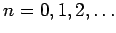
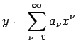
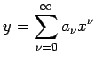
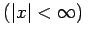
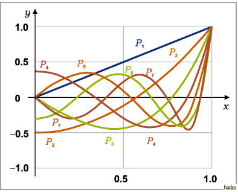
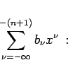
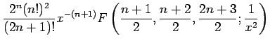
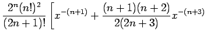
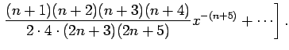

Legendresche Differentialgleichung
Bei Beschränkung auf den Fall reeller Veränderlicher und ganzzahliger Parameter  hat die LEGENDREsche Differentialgleichung die Gestalt
Legendresche Polynome oder Kugelfunktionen 1. Art
LEGENDREsche Polynome oder Kugelfunktionen 1. Art heißen die partikulären Lösungen der LEGENDREschen Differentialgleichung für ganzzahlige  , die sich über den Potenzreihenansatz  ermitteln lassen:
, die sich über den Potenzreihenansatz  ermitteln lassen:
- a) Definitionsgleichung:
-
Dabei gilt .
- b) Andere Darstellung:
-
wobei mit F die hypergeometrische Reihe bezeichnet wird. Die ersten acht Polynome haben die folgende einfache Form:
Die Kurvenbilder von Pn(x) für Werte von n = 1 bis n = 7 sind in der folgenden Abbildung dargestellt.

Zahlenwerte können leicht mit dem Taschenrechner berechnet bzw. in der Tabelle ,,LEGENDREsche Polynome (Kugelfunktionen)`` nachgesehen werden.
Eigenschaften der Legendreschen Polynome 1. Art
- a) Integraldarstellung:
-
Das Vorzeichen kann in beiden Gleichungen beliebig genommen werden.
- b) Rekursionsformel:
-
- c) Orthogonalitätsrelation:
-
Zur Orthogonalität s. auch Orthogonale Systeme.
- d) Nullstellensatz:
- Alle n Nullstellen von Pn(x) sind reell und einfach und liegen im Intervall (-1,1).
- e) Erzeugende Funktion:
- Die LEGENDREschen Polynome 1. Art können auch als Reihenentwicklung der Funktion
erzeugt werden.
Weitere Angaben über die LEGENDREschen Polynome 1. Art s. Lit. 21.1.
Eine zweite partikuläre, von Pn(x) linear unabhängige Lösung Qn(x) erhält man für |x| > 1 durch die Potenzreihenentwicklung

| Qn(x) |
= |
 |
|
| |
= |
 |
|
| |
+ |
 |
(9.60a) |
Die für |x|<1 gültige Darstellung von Qn(x) lautet:
Man bezeichnet die Kugelfunktionen 1. und 2. Art auch als zugeordnete oder assoziierte LEGENDREsche Funktionen (s. auch Lösung der Polargleichung).